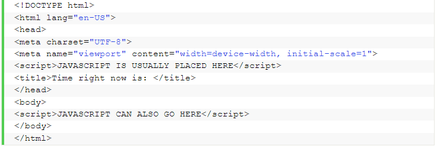
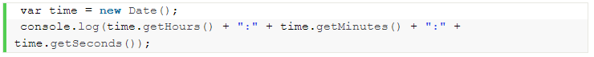
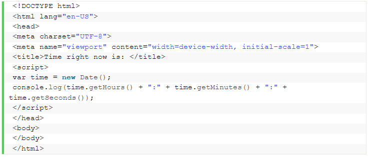
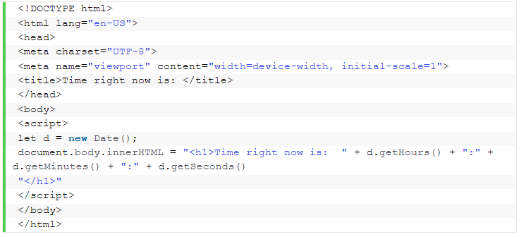
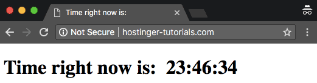
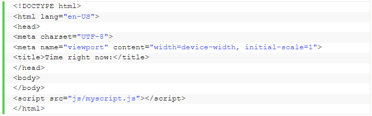
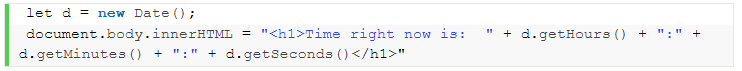
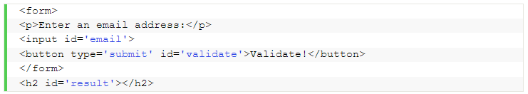
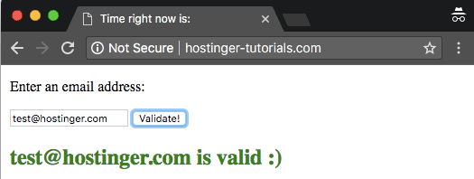
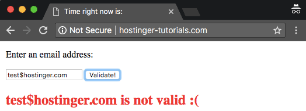

Cómo insertar JavaScript en un código HTML
Si quieres mostrar contenido estático como, por ejemplo, un conjunto de imágenes, entonces HTML puede hacer el trabajo por ti. Sin embargo, las páginas estáticas se están convirtiendo en cosa del pasado. La mayor parte del contenido actual es interactivo e incluye vistosas presentaciones de diapositivas, formularios y menús. Estos elementos mejoran la experiencia del usuario y añaden dinamismo al sitio web. Para ello se utilizan lenguajes de scripting y JavaScript es uno de los más famosos en este sentido. Con él, los desarrolladores pueden crear sitios web que interactúan con el usuario y viceversa. Aunque hay muchos otros lenguajes disponibles, ninguno es tan popular como JavaScript. Para aprovecharlo al máximo, se utiliza junto con HTML. En este tutorial, te mostraremos varias formas de añadir JavaScript a HTML.
Tabla de contenidos
Cómo insertar JavaScript en HTMLAgregar JavaScript directamente a un HTML
Agregar código JavaScript a un archivo separado
Ejemplo de JavaScript para validar una dirección de correo electrónico
Hay dos formas de insertar JavaScript en HTML y hacer que funcionen juntos. Echemos un vistazo a algunas de las formas en que podemos conectar JavaScript con HTML.
Agregar JavaScript directamente a un archivo HTML
La primera forma de insertar JavaScript en HTML es directa. Puedes hacerlo utilizando la etiqueta "script" que debe envolver todo el código JavaScript que escribas. Se puede agregar el código JavaScript:
- Entre etiquetas "head"
- Entre etiquetas "Body"
Dependiendo de dónde agregues el código JavaScript en tu archivo HTML, la carga será diferente. Por lo general se recomienda agregarlo en la sección "Head" para que permanezca separado del contenido de tu archivo HTML. Pero colocarlo dentro de "Body" puede ayudar a mejorar la velocidad de carga, ya que el contenido del sitio web se cargará más rápido, y solo después de eso se procesará el JavaScript.
Para este ejemplo, echemos un vistazo al siguiente archivo HTML que debe mostrar la hora actual:
En este momento, el código anterior no contiene JavaScript y, por lo tanto, no puede mostrar la hora. Podemos agregar el siguiente código para asegurarnos de que muestre la hora correcta:
Envolveremos este código entre script y script y lo colocaremos en la cabecera (head) del código HTML para garantizar que cada vez que se cargue la página, se genere una alerta que muestre la hora actual al usuario. Así es como se verá el archivo HTML después de agregar el código:
Si quieres mostrar la hora dentro del cuerpo (body) de la página, deberás incluir la script dentro de las etiquetas "Body" de la página HTML. Así es como se verá el código cuando lo hagas:
Así es como se vería el resultado final:
Agregar código JavaScript a un archivo separado
A veces, insertar JavaScript en HTML directamente no parece ser la mejor opción. Sobre todo porque algunos scripts de JS deben utilizarse en varias páginas, por lo tanto, es mejor mantener el código JavaScript en archivos separados. Es por esto que la forma más aceptable de incluir JavaScript en HTML es importando archivos externos.
Se puede hacer referencia a estos archivos desde adentro de los documentos HTML, al igual que hacemos referencia a los documentos CSS. Algunos de los beneficios de agregar código JavaScript en archivos separados son:
- Cuando los códigos HTML y JavaScript están separados, se cumple el principio de diseño de separación y hace que todo sea mucho más sostenible y reutilizable.
- La legibilidad y el mantenimiento del código es mucho más fácil.
- Los archivos JavaScript en caché mejoran el rendimiento general del sitio web al disminuir el tiempo que tardan las páginas en cargarse
Podemos hacer referencia al archivo JavaScript desde HTML así:
El contenido del archivo myscript.js será:
Ejemplo de JavaScript para validar una dirección de correo electrónico
JavaScript potencia tu aplicación al ayudarte a validar los datos ingresados por el usuario en el lado del cliente. Uno de los datos del usuario más importantes que a menudo necesitan validación son las direcciones de correo electrónico. Esta función de JavaScript puede ayudarte a validar la dirección de correo electrónico ingresada antes de enviarla al servidor:

Para adjuntar esta función a una entrada de formulario, puedes usar el siguiente código:
Este es el resultado que obtendrías después de combinar todos los ingredientes en un archivo HTML:
Y si la validación es incorrecta, el resultado será diferente:
¡Felicitaciones! Has aprendido a insertar JavaScript en HTML con algunos ejemplos básicos.
| Realizado por: | Siguenos en las redes sociales: |
| Begoña Calvo, Daniel Artigues y Carlos Agueda |


|